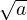

)2
. Seega on hetkel defineeritud ruutjuure võtmine ainult positiivsetest
arvudest ja nullist.
)2
. Seega on hetkel defineeritud ruutjuure võtmine ainult positiivsetest
arvudest ja nullist.Näiteks:
Arvust ruutjuure võtmine on kahega astendamise pöördtehe. Mittenegatiivse
reaalarvu a ruutjuureks nimetatakse mittenegatiivset reaalarvu , mille ruut on arv
a ehk a = ()2
. Seega on hetkel defineeritud ruutjuure võtmine ainult positiivsetest
arvudest ja nullist.
Näiteks: